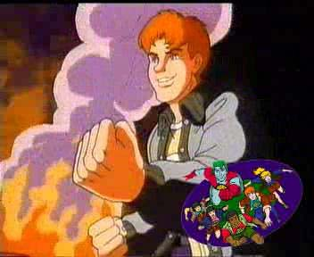
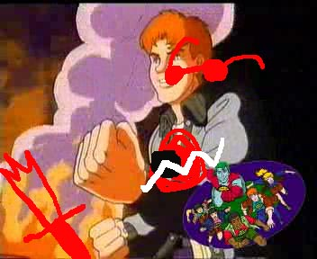

Who let Casey stand on the alchemiter. What kind of father are you, John. Completely neglecting your salamander child’s safety. Shame on you.
No, she really means “big piece of junk” as there is no better way to call that thing. I had completely forgotten about it. It’s the one with the random dsfhgdjh code, right??
How the heck could you ever make Dave Strider cooperative?? …You called him cool, didn’t you?
Aaaahhhh, this is totally not fair! Like, I know she is definitely up to no good but. I really like her?? And her bantering with John?? Dang it.
Of course John’s liking of hackers is only due to the way in which those people are portrayed by the medias as these incredibly cool and badasses dudes. A view I do not share and by which I’m not infuenced by. Not at all. Definitely not. I do not in fact secretly gush about those very cool and badass dudes. I do not hide any sort of weakness for those kind of characters. Not at all. Definitely. Not. …What are you still doing here, can’t you leave a girl slowy working through her denial in peace?? Geez, just move on.
HOO HOO HOO, so we have someone who is pretty full of himself, huh? But seriously, John. Did CG sound like an hacker to you? Like… he is the one who is sadistic enough to do the trolling backward thing. He is obviously not that smart. Plus people who are always that angry shouldn’t get any near a computer, they would end up smashing it to pieces with an hammer. (or just with sheer will power and angry fists, like yours truly)
GC: NO H3 S4YS H3 DO3SNT W4NT TO T4LK TO 4NY OF YOU 3V3R
GC: B3C4US3 H3 H4T3S YOU
GC: BUT H3 W1LL DO TH1S
GC: B3C4US3 H3 WONT B3 4BL3 TO R3S1ST TH3 CH4LL3NG3
EB: uh, ok.
EB: brb then.
And as always she just knows what everyone will do in the end. I wonder if it is just sixth sense or she knows through other means, if you get my drift…. mmmmhhh. Because, you know, the irony of having the blind one be the Seer would be almost too much to handle. Mmmmhhh. Okay, I will stop humming and move on. Oh BUT WAIT. Didn’t she say she felt similar to our Rose?? And the both of them being Seers would also explain how they were able to hear their exiles better than the others?? Okay, why didn’t I catch up on this sooner?? Oh, well.
GC: NO H3 S4YS H3 DO3SNT W4NT TO T4LK TO 4NY OF YOU 3V3R
GC: B3C4US3 H3 H4T3S YOU
GC: BUT H3 W1LL DO TH1S
GC: B3C4US3 H3 WONT B3 4BL3 TO R3S1ST TH3 CH4LL3NG3
EB: uh, ok.
EB: brb then.
And as always she just knows what everyone will do in the end. I wonder if it is just sixth sense or she knows through other means, if you get my drift…. mmmmhhh. Because, you know, the irony of having the blind one be the Seer would be almost too much to handle. Mmmmhhh. Okay, I will stop humming and move on. Oh BUT WAIT. Didn’t she say she felt similar to our Rose?? And the both of them being Seers would also explain how they were able to hear their exiles better than the others?? Okay, why didn’t I catch up on this sooner?? Oh, well.
EB: ok here…
EB: dskjhsdk
GC: TH4NKS
GC: W41T
GC: THOS3 K1ND4 S33M L1K3 R4NDOM K3Y M4SH1NGS
GC: 4R3 YOU M3SS1NG W1TH M3 JOHN >:?
EB: um, no.
EB: they sort of are random.
EB: but it’s the right code, i promise!
GC: OH
GC: OK B3 B4CK IN L3SS TH4N ON3 S3COND
GC: PCHOOOOO
OH MY GOD. PCHOOO?? REALLY?! If you told me I would have encountered a character dorkier than John while reading this webcomic I wouldn’t have believed you. But it is happening. Right here. Under my very eyes. It’s incredible.

John. Your adopted daughter seems to be in need of some assistance. John, turn around. Your Casey is kind of in death peril back there JOHN I SHALL CALL THE SALAMANDER CHILD SERVICES ON YOU AND GET THE POOR THING BACK TO HER MOTHER.
EB: hello?
GC: WH4T
EB: it thought you said you’d be back in less than a second?
GC: 1 W4S
GC: 1 G4V3 YOU TH3 COD3
GC: 1TS PCHOOOOO
This is ridiculously hilarious to me for some reason.
GC: 1T TOOK 4 WH1L3 FOR H1M TO F1GUR3 OUT
GC: BUT 1 G4V3 IT TO YOU 1NST4NTLY FROM YOUR P3RSP3CT1V3
GC: WHY WOULD 1 M4K3 YOU W41T???
GC: TH4T WOULD B3 SO 1NCONS1D3R4T3 >:[
INCONSIDERATE is sending him to fight his Denizen with nothing but his wrinkle-fucker!! INCONSIDERATE is trying to mess with the timeline just because you’re bored!!! INCONSIDERATE(LY ANGRY) is what I will be if John just as much as gets a scratch during this insane mission!!!
EB: oh…
EB: i just thought that was just you going off to get the code…
EB: and making like this rockety noise or something, i dunno.
EB: because you’re kind of goofy.
John Egbert just called you goofy. JOHN EGBERT. That’s an effing accomplishment. It’s like Jade calling you too happy-go-lucky, or Dave calling you stoic, or Rose calling you too wordy.
GC: W3LL YOUR3 K1ND OF
GC: W3LCOM3
GC: YOU UNGR4T3FUL 34RTH HORS3S NO1SY BUTTHOL3!!!
GC and CG really are original when it comes to ridiculous insults. I wonder if they come up with them during their candle light hate dates, or they just have brainstorming sessions together.
EB: oh gosh, i’m sooooo sorry!
EB: this is just a stupid code, i’m sorry.
Awww, John is apologizing profusely because he made the creepy troll girl upset. Wait, why is he apologizing. Isn’t this the same girl who nonchalantly described in detail the way she would murder him in an earlier pesterlog?! WAIT, SHE SAID SHE WOULD MURDER HIM, WHY ARE WE FOLLOWING HER INSTRUCTIONS AT ALL. JOHN, EXPLAIN.
EB: are you sure it’s right, it seems kind of…
EB: obvious.
GC: H3 W4S CONV1NC3D TH1S 1S TH3 R1GHT COD3 4ND H4D SOM3 UNFL4TT3R1NG TH1NGS TO S4Y 4BOUT TH3 1NT3LLIG3NC3 OF YOUR SP3C13S FOR NOT B31NG 4BL3 TO FIGUR3 1T OUT
GC: WH1CH 1 W1LL K33P TO MYS3LF B3C4US3 UNL1K3 YOU 1 4CTU4LLY H4V3 SOM3 FUCK1NG M4NN3RS
Wow, GC really got all worked up about this. Did John offend her or something?! Because he is questioning the hacker guy’s skills?? …Or is she just fucking with him? Yeah, that’s probably it.
Why do I even bother making assumption with this one troll.
EB: bluuuh, oh man, i got so served, bluuuuuuuuuh!
GC: 1 4M UNF4Z3D BY YOUR HUM4N BLUHS
GC, you don’t need to be an alien to be unfazed by his bluhs. Literally no one is affected by those. We just don’t know why he keeps typing those little words. We suspect it is to lure enemies into trusting him by making them think he is charmingly adorkable. We also know a plan of that kind would be far over his standards and therefore he is just a plain out adorable dork.
GC: 4NYW4Y 1F 1T W4S SO OBV1OUS WHY D1DNT YOU GU3SS TH3 COD3?????
EB: well you see, the explanation is perfectly simple and scientific.
EB: it was because shut up.
EB: shut up is why.
GC: >:D
EB: i guess i’ll make this rocket now.
EB: and see if this dumbass code actually does the trick.
GC: OK JOHN
GC: ONC3 YOU M4K3 1T 1M SUR3 3V3N YOU 4ND YOUR UND3RD3V3LOP3D BON3 NOOK W1LL B3 4BL3 TO F1GUR3 OUT WH4T TO DO
GC: T4LK TO YOU ON TH3 OTH3R S1D3 >:]
Underdeveloped… bone nook?? What. Is that the skull. Troll anatomy confuses me. AND OTHER SIDE. OH BOY. WE’RE REALLY DOING THIS. HE IS GOING TO FLY TO THAT GATE.
DAVE WHAT ARE YOU DOING I BELIEVE THERE ARE EGGS REQUIRING YOUR ASSISTANCE RIGHT NOW AND IT KIND OF IS A MATTER OF SURVIVAL
TG: ok im in
EB: in where?
TG: the medium
WHAAAAAAAAAAAAAAAAAAAAT!!!!!!!!!!!!!!! WHAT WHAT WHAT WHAT???? What is this bullshit??? He is already in??? No Enter flash?? Just like that?? Where is his Enter flash. It was going to be ridiculously overdramatic, reach levels of irony never witnessed before, have Cal just flashing on the screen at random moments and an incredibly cool music accompanying it WHERE IS THE DAVE: ENTER FLASH.
EB: oh, already?
TG: what do you mean already shit took 4 goddamn hours
EB: huh, i guess time flew by while i was doing other stuff.
Yup. Time sure flies while you’re bending the laws of physic, resurrecting dead grandmas and illegally adopting salamanders, doesn’t it?
EB: how did it go?
EB: with you and jade i guess?
Oooooh, boy. Take the worst you can imagine, multiply it by infinity, take it to the depths of forever, and you would still only have a glimpse of what really went down in those four hours.
TG: i dont want to talk about it
TG: imagine the worst day of my life
TG: just stood up and clinked a glass like it was about to give a speech
TG: then took a shit in my dinner and passed out with its pants down
EB: ew dog! ewwww!
TG: yeah
EB: so nasty! gross dude!!!
TG: stfu
My metaphore was way classier and didn’t involve anyone with their pants down. And when will Dave stop being so cranky???? It all started when Jade told him she was going to get him into the game and it went downhill from there. When will he stop being like this. When will Dave return from puppet hell.
EB: i’m in a rocket pack and i am about to blast off into space.
TG: ok
Does anything even faze Dave? Like I know his home life was a train wreck and that he probably witnessed all kinds of weirdass things every day while living with BRO……… No, okay. He’s completely justifiable. Why should anything ever faze him. He’s probably seen things we can only imagine. People blasting off into space are nothing.
EB: it should be sweet.
TG: i need some advice
TG: my kernelsprite which was this brainless feathery asshole with a sword in it
TG: turned into this bigger like ghostly feathery asshole
TG: with a sword in it
TG: it seems to want me to prototype it again
TG: not sure what to do
I’d say do anything you want as long as you don’t prototype Lil'Cal but we all know that is inevitably going to happen so… We will just gotta get used to the horror.
EB: hmm…
EB: have you asked rose?
TG: shes asleep for some reason
EB: wow, really?
TG: yeah i saw her there
TG: all tuckered out
TG: like she got smacked in the face with a pillow case full of the snooze wizards beard dander
TG: cause obviously its fuckin prime time for swiping some shuteye about now
TG: like a few hours into her magic stupid quest
Rose was really eager to see Derse! Well, actually Dave is the only one we haven’t seen sleeping. John took a nap just as two giants imps decided to sneak up on him because he has the best timing ever, Jade has been sleeping for the 70% of her screentime, Rose is catching some zzzs just as the boys speak… the only one left is Dave. I wonder if he will take off his shad— pffftahahahaha. yeah, right. no. B’-)
TG: anyway what do you think
EB: i don’t really know, i mean…
EB: it’s supposed to be like your ghostly spirit guide or something.
EB: unless you have the remains of a wise old dead grandparent lying around, i’m not sure what to tell you!
John. Oh, John. Sweet, naive, dumb John. Relatives don’t have to be dead to be prototyped! They just have to be willing and crazy enough…. crazy relatives, huh…. where did BRO run off to again… Kidding, kidding. I actually think even Cal would be a better candidate.
TG: ok fine but
TG: it seems to be suggesting something here
TG: and
TG: i guess im kinda weirded out by its suggestion
EB: i don’t know, just do what it says!
John, NO. He will hate you for letting him do it. Well, Calsprite is finally confirmed for good. Not that anyone was doubting it. Where did BRO even get that thing anyway?! I think Cal is like those weird China dolls. You know the ones you find abandoned on the side of the road and look harmless enough that you bring them home?? And then all kind of weird supernatural things start happening?? And you find the doll in places pretty far from where you left it?? Staring up at you from the end of dark, creepy hallways, with shiny, soulless eyes. And what the fuck you swear you saw it blinking once and you dream of it whispering to you in the language of the dead in your sleep, a language that you somehow understand and perhaps… perhaps it’s not a dream. And you start slowly slipping out of your mind, you try to get rid of it, you try so many times, but in the end it always shows up on your doorstep. Grinning, smiling, mocking you. And that’s the story of how BRO lost it. This is a 100% canon fact, of course.
EB: it knows stuff about the game, so it probably knows better than i do…
EB: i gotta go!
EB: gonna blast off to the seventh gate.
EB: and, uh, win this game i guess.
TG: ok well it definitely sounds like youre fucking something up over there
YESSS?!?!?? You might want to… you know… try and talk some sense into him…?? “dude don’t fly to the seventh gate that sounds really fucking dumb”. …something like that. :(
TG: but alright later
EB: later.
DAVE STRIDER, YOU DIGRACE. Well, I guess they’re even now. John will let him prototype the puppet and Dave will let John blast off to his denizen’s palace. This is just great.

This is absolutely no place for children. You take dear, sweet CASEY into protective custody.
YOU FINALLY FUCKING NOTICED. Wait, are we totally sure that living beings can be stored in there…? Can she even breathe joHN WHAT THE HELL.
| > John: Blast off. |
Oh. Oh my God. We are really doing this. Oh dear. I thought he would back out at the last moment but… Oh, dear.


|
PCHOOOOO |
FROG GODS, PLEASE PROTECT HIM!! FOR HE DOESN’T KNOW WHAT HE IS DOING!!

Nerdy PCHOOOOs aside, he actually looks kind of competent here. Maybe he can make it out of his denizen’s palace by squatting around and screaming “why did i think this was a good idea!!!” as the monster chases him. A big scare for everyone, and for John some bruises, a change of pants in order, and an important lesson learned: never trust the troll with the psychotic laugh. Maybe his denizen will take pity on him. I mean… he will show up branding literally two irons attached to a wood stick. The Denizen will take one look at him, direct him toward the exit and be like “only return when you’re really ready to fight, kiddo. also when you work up the courage to show your face again bring me some of those delicious fluorescient mushrooms that grow on the east side of my land”… Yes, this can and will totally happen. But seriously, John should thank God that Plot Armor is a thing that exists and Jade has yet to enter this godforsaken game, otherwise he would be SO DONE FOR. Of course something horrible will happen nonetheless, just not that horrible. I think the gist of John’s character arc will just be really bad things to him until he gets to the point in which he would rather stab his toe than say that Sburb is “just this game” ever again. So really, I’m gonna suffer along with him, I’m resigned.
AND OF COURSE THERE IS A POV SWITCH. OF FUCKING COURSE. At least I will get to see his Land. Even though this is no Enter flash. …Or maybe it is?? It wouldn’t be the first time we saw a flash with things that have already happened in the reader’s perspective. Even so it would definitely have been called Dave: Enter… so no Enter Flash.
Red spyrographs for Dave.
Wait. GATE 5??
LAND OF HEAT AND CLOCKWORK. Makes sense!
Here he is! In all his ironic glory!
WHOAH! Cool …suit… cool …everything he has that I’ve never seen him alchemize??
LET THE FLASH STEPPING BEGIN
WELL HE LOOKS AT ME
AND I LOOK AT HIM
AND HE LOOKS AT ME
AND I LOOK AT H—
AAAAAAAAAAAAAHHHHHH HOLY SAINTS HE DID IT
PFFFFFFFFTHAHAHAHAHAHAHAHAHAHAHAHA HOLY GODS THIS IS HORRIFIC
OH MY GOD OH MY OG OH MY GDO
Are those his turntables??
I understand flash stepping but this his pure BULLSHIT.
THAT HUGE ASS MONSTER IS SCARED OF DAVE
Cal, you totally ruined Dave’s personal Moment Of Cool. He even did the shiny glasses thing. That is a ign that you must not interrupt him. ……..I don’t even know which face is best between the two of them.
Well, it looks like we jumped ahead a bit. I don’t know how much exactly but considering that John took like… what? a couple of hours to reach his first gate… But taking into account the fact that Dave is way better at fighting… No, I still have no idea.
> Dave: Consult with Calsprite.
……Please no. I don’t want this. I’m going to just… skip this page. I can’t do this. WHAT IF IT REALLY TALKS. No, I refuse. Nope. I don’t want this. I’ve been dreading this moment. Ugh. Alright, here it goes *takes deep breath*


|
|
…………………………………….I’m gonna click.
CALSPRITE: HAA HAA HEE HEE HOO HOO
DAVE: shut up
CALSPRITE: HOO HOO HAA HAA HEE HEE
CALSPRITE: HEE HEE HAA HAA HOO HOO
HOLY SHIT HOLY CRAP HOLY DAMN H— OH WAIT. It’s just laughing?? This doen’t really classify as talking. …Oh. This is wonderful. I feel like I have been blessed. I can hear choirs of frog angels sing. Cal doesn’t talk. It doesn’t. Because it’s a puppet. Puppets are non-sentient. Why was I even worrying. What did I fucking expect. I’ve been worrying about this for like two weeks. I feel really dumb right now. Dumb but wonderfully relieved.
CALSPRITE: HAA HAA HEE HEE HOO HOO
DAVE: shut up
CALSPRITE: HOO HOO HAA HAA HEE HEE
CALSPRITE: HEE HEE HAA HAA HOO HOO
DAVE: no
DAVE: just
DAVE: god damn it
CALSPRITE: HEE HEE HEE HEE HAA HAA
CALSPRITE: HEE HEE HOO HOO HEE HEE
DAVE: please
DAVE: just once
DAVE: shut the hell up
CALSPRITE: HOO HOO HAA HEE HEE HOO
CALSPRITE: HOO HOO HEE HAA HEE HAA
CALSPRITE: HAA HAA HAA HAA HAA HAA
DAVE: shut up
CALSPRITE: HEE HEE HEE HAA HAA HAA
CALSPRITE: HOO HOO HOO HEE HEE HEE
DAVE: shut
CALSPRITE: HAA HAA HEE HEE HOO HOO
DAVE: the
CALSPRITE: HAA HAA HEE HEE HOO HOO
DAVE: fuck
CALSPRITE: HAA HAA HEE HEE HOO HOO
DAVE: up
CALSPRITE:
It just laughs creepily?? Dave, at least it doesn’t talk. What kind of laugh is that even. What is it, the uploaded version of Nanna’s with now 75% more vocals besides oo’s?? No, wait. HUU HUU HUU is missing.
| > Dave: Pester Rose. |
I… I survived it. The Dave and Cal pesterlog. Look, we’re moving on. Pestering Rose. And I’m still here. Wow.


Cool Apple Shades. Wonder when he made them. I SURE DIDN’T SEE HIM.
– turntechGodhead [TG] began pestering tentacleTherapist [TT] –
TG: thats it i cant take it anymore
PPFFFFFFFFTAHAHAHAHAHAHAHAHAHAHA. Daaaaaveee, c'mon. You’ve been in The Medium for how much time?? Hours? You can’t be already done with it.
TG: it was such a huge mistake prototyping seppucrow with this useless mindnumbing jackass
TG: im going back
NOW he realizes it. He’s going back?? To where?? I seriously doubt you can get back to Earth.
TT: Already?
TG: what do you mean already shit took 4 goddamn months
WHAAAAAAAAAAAAAAAAT???????? FOUR MONTHS??? WHAT???? WHAT THE HELL???? DID WE JUMP AHEAD OF FOUR FUCKING MONTHS??? WHY???? WHAT IS THIS BULLSHIT.
TG: or something
TG: i dont know im kind of losing track of how long its been with all this time hopping
Time hopping?? Does that mean that he has his powers now??
TT: It just sounds like you’re making a rash decision based on temporary aggravation with a laughing puppet.
Rose, you don’t know what he is going through. You’ve got your nice now non-decesead cat.
TT: I thought we planned to progress as far as we could before you went back.
TT: To gather information, and avoid repeating mistakes.
Does she mean back in time?? And what mistakes?? WHAT IS HAPPENING.
TG: what else is there to know
TG: we lost
?????????????
- ????????????
- ????????????
- ??????????????
WHAT THE FUCK DID YOU JUST SAY THIS GAME HASN’T EVEN BEGAN HOW CAN YOU EVEN LOSE WHAT THE FUCK HAPPENED WHAT THE SHIT DOES “WE LOST” EVEN MEAN
TG: cant finish the game with a dead heir and witch
wAHT. NO. NONONONON NONON NO NO NO PLEASE NO WHAT NO NONONO NOOOO???? NO. THEY CNA’T BE DEAD WHAT IS THIS NO NOPE NO
TT: We don’t know Jade is dead for sure.
NO JADE NOOOO IF JOHN IIS DEAD SHE IS TOO NOOOOOOOO NOT JAAAADEEEEE EVERYONE BUT JADE THIS IS WORNG NO NOPE NO NO NO
TG: yeah well she had a big fucking meteor bearing down on her and we never heard from her again
NOOOOOOOO!!! NO NO!!!!! JADE CN’T BE DEAD. SHE CAN’T SHE HAS WAITED YEARS TO PLAY SHE WASNT WAITING FOR HER DEATH YOU CAN’T STEAL FROM HER A FUTURE SHE HAD ALREADY SEEN THIS IS CRUEL IT’S WRONG STOP IT
TG: yeah well she had a big fucking meteor bearing down on her and we never heard from her again
TG: or the trolls for that matter
TG: after they tricked john into skipping way ahead and getting his ass handed to him by the denizen
TG: i guess once they managed to sabotage us they were done with us
TG: and since john died he couldnt get jade in on time so whether shes alive or not shes as good as dead from our perspective
TG: only thing left to do is change all that
HE’S GOING TO GO BACK IN TIME BECAUSE JOHN AND JADE DIED HE WILL FIX IT HE WILL FIX EVERYTHING DAVE WILL FIX IT EVERYTHING WILL BE OKAY AGAIN I WISH I UNDERSTOOD THAT BEFORE CRYING ABOUT JADE BUT IT'OAKY IT’S OKAY AAAAAAAAAAAAAH. GIMME A MOMENT I NEED TO CALM DOWN.
……………..Ooookay. We will fix it. Everything will be daijobu. All according to keikaku.
TT: Are you sure you’re ready?
TT: You’ll remember the plan we discussed?
TG: theres not much to remember
TG: i go back and tell john not to be an idiot and get trolled like such a gullible stooge
TG: i dont know what he was thinking
TG: even we couldnt kill one of those things yet
TG: with our higher levels and all our sick gear
TT: It still seems hasty to me.
TT: Maybe I’m just not as comfortable with time travel as you.
TG: nah itll be fine dont worry
Says you, the time player with four months of experience.
TT: After you go, what do you think will happen to me?
TT: Will I just cease to exist?
WHAT????!!! NOOOO!!!! I THOUGHT SHE WAS COMING!!!!!!! NO!!!!!
TG: i dont know
TG: i mean your whole timeline will
TG: maybe
TT: Maybe?
TT: Is there a chance it’ll continue to exist, and I’ll just be here alone forever?
TT: I’m not sure which outcome is more unsettling.
OH MY GOD ROSE. ROSE NO. WHY. WHY ALL THIS. WHAT IS THE PURPOSE.
TG: the thing with time travel is
TG: you cant overthink it
TG: just roll with it and see what happens
TG: and above all try not to do anything retarded
Of course he says that. He’s not the one that will be left behind and disappear.
TT: What do you think I should do?
TG: try going to sleep
TG: our dream selves kind of operate outside the normal time continuum i think
TG: so if part of you from this timelines going to persist thats probably the way to make it happen
TT: Ok.
TG: and hey you might even be able to help your past dream self wake up sooner without all that fuss you went through
Fuss?? Maybe… maybe she will find a way to survive???
TT: I think the true purpose of this game is to see how many qualifiers we can get to precede the word “self” and still understand what we’re talking about.
TG: the true purpose is to make a sprite that doesnt make me want to flog myself raw with my own brain stem
TG: anything else is gravy
ROSE THIS IS NO TIME FOR JOKES. I don’t think that Dave has really understood what could happen to Rose really soon. She may want a word of comfort. You know, an “everything will be fine” EVEN IF THAT’S NOT TRUE WHO CARES. She probably tried to postpone his leave. But she knew that eventually this moment was coming…. oooh, boy, I can’t do this….
TT: If my past self can wake up sooner, maybe I’ll be the one to visit you first this time.
TT: I’ll fly by and remind you you’re already awake and don’t know it.
Dave has always been awake??? What the heck. Did he think that Derse was a dream or something. How could he not have realized it.
TG: yeah thatd be cool i guess
TG: im gonna go now
TT: Good luck.
Rose, I’m sorry that Dave has the emotional IQ of a shoelace, I’m so sorry. He just leaves like that. “im gonna go now”. His parting words. Wow.
Dave: Reverse.

Dave looks kind of constipated. I understand that this is a really shitty situation but still, what kind of face is that.

OH NO. FUCK THIS. He’s already in the game??!?! I want his enter flash!! I don’t even know what he did with that egg! I don’t even know if Bro came back soon enough on his hoverboard to enter The Medium with him! What the hell! I WANT A DAVE: ENTER FLASH.


EB: i gotta go!
EB: gonna blast off to the seventh gate.
EB: and, uh, win this game i guess.
TG: ok well it definitely sounds like youre fucking something up over there
TG: but alright later
EB: later.
This was their last conversation… before John died. Can you imagine how fucking much Dave regretted not stopping him? Oh, dear.
|
TG: WAIT |
All caps in Dave’s language means “shit is going/about to go down”

|
TG: ok its me from the future |
Yeah, no big deal. Nothing exceptionally weird or out of the ordinary. Considering that you don’t even know you will be able to time travel. CONSIDERING THAT HE DIDN'T— OOOOOHHH. OH NO. When John died Dave didn’t even know he would have been able to fix things… oh, boy…..
TG: i just appeared
TG: from the future
TG: wearing a rad suit
TG: he says dont go
TG: or youre gonna die
EB: pfffff.
EB: lame.
EB: what kind of gullible stooge do you think i am?
The same gullible stooge who listened to the words of a creepy troll girl!!! who had already made threats on your life before!!! who went on a suicide mission!!! and blasted into space on a rocket!!! without even a second thought!!!

John, you ungrateful goof, you look way too pissed given the fact that we are trying to save your nerdy, sorry butt.
TG: he says i dunno gullible enough to trust a leetspeaking troll who wants you dead and strap on a rocket pack cause she said to
Sometimes I say the exact same thing just before Dave says it and it honestly weirds me out.
EB: this is like some terrible april fools prank.
EB: but 13 days too late.
EB: remember, you are talking to the pranking MASTER.
Now that I think about it… What kind of hell do you think the Egbert household is on April Fools. I bet authorities make the whole neighborhood evacuate. To reduce the numbers of victims of John and DAD at the minimum. And there are like explosions. And hundreds of ufo sightings that only turn out to be baked goods that were shot so high they took orbit. Yes, shot. Last year 2 dead and 7 wounded.
…Yes, it is that time of the night again, why were you wondering??
TG: ok that was probably the dumbest thing you ever said just now
EB: if future you is real, then why don’t you let me talk to him.
JOHN THEY ARE LITERALLY THE SAME FUCKING PERSON. Only Future!Dave is obviously really angsty and 45% more of a prick, but only because he probably feels so guilty and miserable about what happened that even Lil'Cal Satan would feel sorry for him. Like this boy must have so many issues accumulating after the last four months that he would make psychologist around the word give up their careers and degrees.
TG: do you hear what youre saying oh my god
TG: this guy is me if i get him to talk to you youre just talking to me again jesus it proves nothing
EB: hold on, someone else is bugging me.
– turntechGodhead [TG] began pestering ectoBiologist [EB] –
DAVE WHAT ARE YOU DOING. YOU ARE RIDICULOUS. THE BOTH OF YOU. FUTURE AND PAST. YOUR DUMBASSERY IS A TEMPORAL CONSTANT NO MATTER THE UNIVERSE NOR THE TIMELINE.
TG: john stop being a tool and unbuckle yourself from that piece of shit
TG: if our friendship means anything youll listen to me and past dave
Oh. Oh, boy. He dropped the friendship card. He really must not know what else to do.
TG: this is future dave by the way
EB: hahaha!
EB: wow, you’re really pulling out all the stops for this stunt!
EB: using your phone and computer at the same time to message me.
EB: you’re kind of going through a lot of trouble actually, i don’t know why you’re bothering with this.
TG: yeah exactly why would i bother
TG: this sort of cornball horseshit is your cup of tea not mine
TG: dont make me track you down through time and stop you in person
EB: you can’t track down through time WHAT YOU CAN’T CATCH!
EB: pchoooooo!
OH MY FUCKING GOD JOHN EGBERT KEEP YOUR FEET ON THE GODDAMN GROUND OR SO HELP ME I’VE NEVER SEEN ANYONE THAT EAGER TO GO AND DIE
TG: oh god did you just blast off
EB: no…
EB: but that would have been sweet if i did just then.
TG: ok well just dont ok
TG: im turning this timeline over to past dave
TG: and helping you all stay alive and do this thing the right way this time
TG: just stay on the goddamn ground for fucks sake
EB: ok, i guess…
Y-You guess??? Dave, go over to wind land and physically restrain him please. And I guess Dave is staying. Well, of course he will, where else would he go? His timeline disappeared along with his version of the other kids. …I can’t handle two Daves.

WHAT THE FUCK WTF THE FUCK NOOOO NONONONO!!!!!!!!! Dave!!!! Waht are yuo thinking!!!! This is an horrible decision!!!! …Oh, my God. He just degraded himself to a mere game mechanic!! A game mechanic!! A sprite!! Jaspers is a sprite. Not one of the fucking protagonists. Not a kid. Nope. Sprites get irrelevant really fast. John already doesn’t need Nanna anymore. Rose has already dismissed her cat. As soon as Dave goes through the First Gate Dave will be left behind— OH. OH NO NO. I will have to call him Davesprite?? He’s not just a fucking sprite. He is just a kid who had the misfortune to be the one who had to make the trip back in time and see his friends dying instead of being the Dave just waiting for a different version of him to show up and make everything right again! He shouldn’t be a sprite. He is Dave.

This is going to be weird.
DAVE: hey
DAVESPRITE: sup
Or they could keep being ridiculous. Of course. The Dave Strider Policy.


WHAYGUSHIUOHJOAJALDJAAAAAAAAAAAAAAAAHHHHHH!!!!!!!!! WHAT THE FUCK IS HE DOING!!!!!!!!!! JOHN THERE WILL BE NO DAVES IN RAD SUITS AND TIME-TRAVELLING TURN TABLES TO SAVE YOUR ASS IF YOU DIE AGAIN!!!! SOMEONE STOP HIM PLEASE!!!!!!
Rose: Prepare for nap.

You bundle up your knittings into a cozy nest. You aren’t all that tired though. It’s hard to imagine falling asleep without the luxury of Harley’s narcolepsy.
Rose, don’t say that. Jade’s narcolepsy will get her in big big troubles some day.
> Future Dream Rose: Cease to exist.
….noooooooooo,,,whyyy, nonono, why i’m so sorry why this…………..

rooooooooooooooooose noooooooooooooo i can’t do this i can’t oh god why
rose did not deserve this she didn’t nobody did oh my god she didn’t even blink to the prospect of ceasing to exist she is so brave rose i’m so proud of you and i’m so sorry please no more bad timelines no more oh fuck i’m gonna cry here come the tears nope nope nope *takes big big breath*
…She merged with current Rose. A part of her will keep existing in our Rose. She will get her knowledge but perhaps her memories too. Dave doesn’t deserve to be the only one who has seen what would have happened if things went awry. That timeline shouldn’t have existed in the first place.
Davesprite: Troll GC.
OH MY FUCK THIS IS NOT THE MOMENT. YOU COME INTO THIS TIMELINE. AND DARE SHOWING YOUR FUCKING FACE. YOU DARE TALKING TO DAVE. TO DAVE. FUTURE DAVE. OR ANYONE IN GENERAL. I NEED AT LEAST TWO ACTS TO FULLY DIGEST THIS, THEN YOU CAN MAYBE SAY A WORD AGAIN.
– turntechGodhead [TG] began trolling gallowsCalibrator [GC] –
Dave contacted her…? What?
TG: dont talk to john anymore hes an impressionable doofus
TG: your plan didnt work
TG: i mean it did
TG: but then suddenly it didnt
TG: so you might as well quit trying
GC: YOU SM3LL L1K3 OR4NG3 CR34MS1CL3S
AAAAAAAAAAAAHHHHHHH OH MY GOOOOOOODDDD IS THAT ALL YOU HAVE TO SAY????? SHUT THE FUCK UP AND LEAVE THEN.
TG: what
TG: youre aliens do you even have orange creamsicles
GC: OF COURS3 WH4T K1ND OF 4WFUL C1V1L1Z4T1ON WOULDNT 1NV3NT OR4NG3 CR34MS1CL3S
GC: NOT ON3 1D W4NT 4NYTH1NG TO DO W1TH
Agree— WHAT THE HELL ARE YOU DOING DAVE. CONVERSATING????
TG: no more hijinks from you cause ill make sure they wont work
GC: W3LL OBV1OUSLY 1 KN3W 1T W4SNT GO1NG TO WORK
GC: MY FR13NDS H4V3 B33N T4LK1NG TO JOHN FROM TH3 FUTUR3
GC: YOUR FUTUR3
GC: WH3R3 H3S NOT D34D
GC: SO TH3R3 W4S NO W4Y WH4T 1 D1D W4S GO1NG TO K1LL H1M
GC: 1 JUST W4NT3D TO M3SS W1TH H1M 4ND STUFF
B-but…. not this Dave’s future…. Dave’s future was awful. I mean Davesprite’s future. She doesn’t get it, does she? It was all a game to her. A pastime. In which she caused the death of three kids.
TG: i dont think youre following
TG: you DID kill him sort of
TG: then i went back in time to stop him
GC: Y34H 1 G3USS3D TH3R3 W4S 4 CH4NC3 SOM3TH1NG L1K3 TH4T M1GHT H4PP3N
YOU GUESSED. WELL GUESS THIS SHIT, GC; You created a timeline in which John showed up to his Denizen’s palace and found the thing awake. He probably realized he wasn’t going to make it. A thirteen y/o child realizing he was going to die and there would be no escaping it. Jade never entered her session. Jade had been waiting for this day for years. Ironically enough, she was waiting for the day she would have died. Rose had to accept the fact the one day Dave would have had to come back and she would have ceased to exist. You created this all. Congratulations.
TG: alright but
TG: did you guess that by trolling john to his grave
TG: and making me splinter us off into an alt timeline
TG: that you were basically complicit in making our timeline go the way it was supposed to go all along
TG: where future me is now helping dave and we just keep playing
TG: and our actions ultimately lead to the trouble youre all in now
TG: thus leading you all to troll us incompetently
GC: OH
GC: NO >:[
GC: 1 D1DNT TH1NK OF TH4T
They tried to change it actually, but it was “set in stone”. Can’t change what has already happened. At least not in the very same timeline that will lead to whatever they will do. And we got confirmation that the trolls are in trouble because of something the humans did. But the trolls caused it in the first place. Wow, someone let CG know about this so he stops bitching about it with Jade?? Jokes on him, he did it all by himself. I mean… he caused… whatever trouble they’re in now. This is getting confusing really fast.
TG: yeah
TG: see
TG: none of you ever thinks anything through
TG: whos in charge of timeline management there
TG: i gotta give him the business
GC: SH3 DO3SNT W4NT TO T4LK TO 4NY OF YOU
GC: 4ND H4S M1SG1V1NGS 4BOUT TH1S WHOL3 TH1NG
GC: NOT 4LL OF US 4R3 TH4T 3NTHUS1AST1C 4BOUT TROLL1NG YOU GUYS
GC: 4ND TH3 ON3S WHO 4R3 SORT OF SUCK 4T 1T >:|
SHE IS THE MAID OF TIME, ISN’T SHE??? Who else would be in charge of timeline management?! So she isn’t really on board with this trolling business. Maybe she is …LE GASP!! ACTUALLY SMART??? :-O
TG: well at least you got john to off himself so i guess youre not totally incompetent like the others
TG: like that awful rapper
How does killing people qualify as competent???? Plus, GA is great, shut up. And AT is…umh… well GIVE HIM SOME TIME HE IS NEW TO THAT RAPPING STUFF.
GC: SO JOHN 4CTU4LLY D1D WH4T 1 S41D?
TG: yeah
TG: im telling you
TG: huge pushover
TG: he will do what you say
TG: unless it happens to be for his own good
TG: then all a sudden hes a tough nut to crack go figure
Readily taking orders from whoever gives enough fucks to boss him around but utterly refusing to follow his best friend’s advise even in the prospect of possible death: ~ OnlyJohnEgbertThings ~
GC: NOW 1 F33L K1ND4 B4D
GC: 4R3 YOU SUR3 1 C4NT T4LK TO H1M
GC: 3V3N 1F 1TS JUST TO 4POLOG1Z3
GC: WOULD TH4T B3 OK W1TH YOU S1R BR4V3 KN1GHT >:?
STOP BEING ALL OVERLY FRIENDLY AND ACCOMMODATING
TG: yeah thats fine i guess
TG: no more coy bullshit antics though
TG: not even like
TG: an idiotic angry winking emote
GC: OR WH4T
GC: YOUR3 GO1NG TO HUNT M3 DOWN THROUGH T1M3 OOOOOH OH NO
GC: >;]
WHAT THE FUCK. This girl knows no limit nor decency. IS SHE FUCKING FLIRTING WITH HIM?? Time travel or not, she did kill off indirectly everyone but Dave. That’s some fucking courage that you must have to show up and flirt with him.
TG: yeah
GC: YOU DO R34L1Z3 1M W4Y H1GH3R ON MY 3CH3L4DD3R TH4N YOU
GC: 3V3N 1F YOU 4R3 FROM TH3 FUTUR3
GC: 4R3 YOU SUR3 YOU W4NT TO G3T YOUR CLOCK3D CL34N3D BY 4 BL1ND CH1CK
TG: ok even if thats true
TG: i just merged with an impaled orange goddamn bird and now i got all these crazy powers
GC: UGH
GC: S3LF PROTOTYP1NG SO DUMB
GC: TH1S 1S WHY YOU 4LL SCR3W UP SO B4D
GC: 4LW4YS B3ND1NG TH3 RUL3S L1K3 TH4T
Self-prototyping is dumb if you just throw yourself into the sprite, not if your alternate version from the future does it. Wait. Actually….Why is self-prototyping dumb?? You get all kinds of information about the game, and there is nobody to give you an hard time with coy riddles when you yourself are the sprite. You can fly around. You got “all these crazy powers”. It’s an incredible advantage. If anyone just threw themselves into the kernel, there would be no problem about umhhhh…. HOW DO I EXPLAIN THIS. Your life kind of loses value. You become less of a person in the eyes of your co-players. BUT. If everyone did it, that wouldn’t be a problem. Yeah. Well, guess that’s not a possibility anymore.
GC: 1V3 B33N R3S34RCH1NG SOM3 OF YOUR 34RTH SO4P OP3R4S
GC: 1S TH1S YOU

….Who is this guy?? “humancaptainplanet.jpg”?? I’ve never watched this cartoon in my life.
TG: oh jegus fuck no
TG: why would that breathtaking douche remind you of me at all
Dave, first of all, the “s” in nowhere near the “g”, how do you even make that typo?? Second… breathtaking?? Really, Dave?? Really?? The douche part is there though.
GC: BUT H3 H4S 4 F13RY P3RSON4LITY
GC: SORT OF BR4SH 4ND 1MP3TUOUS
GC: 4ND 1N YOUR F4C3
GC: L1K3 F1R3 1TS3LF >:D
There is something called being subtle when you’re flirting, GC. I don’t know how it works on your planet but on Earth this comes off as really awkward and sudden. So you’re in luck since we’re in The Medium.
TG: now i know youre bullshitting me
TG: do i seem like the kind of guy whod accept a magic ring from whoopi goldberg
How the fuck does Whoopi Goldberg even come into play now?? Okay, I’m not understanding anything anymore.
TG: to awaken some egregious homofantasy for a ripped blue dudes mammoth eco friendly bulge
TG: that guys an asshole and needs to be sealed in a dufflebag and whipped something ungodly with a bamboo chute
……..Homofantasy? Okay, now I gotta look this up.
9 Beloved Children’s Characters Who Are Obviously Gay
10 Superheroes Who Are Probably Gay | SMOSH
19 Kids Show Characters Who Were Totally Gay Heroes
OH MY FUCKING— OH MY GODNESS. Okay, Dave. Considering that this is the fourth freaking person who has something to say about your sexuality… (I’m not kidding! First Rose, then John, AT and now GC.) Is there something you may want to tell us, Dave?? ;)
GC: WHOS WHOOP1 GOLDB3RG
TG: who cares
GC: OK 1 M4D3 SOM3 MOD1F1C4T1ONS
GC: TH1S 1S SO YOU D4V3 COM3 ON 4DM1T 1T

…………Am I supposed to believe her when she says she is blind?? Like seriously, she even drew the broken record.
TG: ahahahahaha
TG: ok yeah that is pretty much fucking spot on
TG: youre actually a pretty good troll
TG: as long as you dont bug john i guess thats all there is to say on the matter
AM I THE ONLY ONE WHO IS FUCKING BOTHERED BY THE FACT THAT SHE (INVOLUNTARILY OR NOT) KILLED OFF THREE KIDS OUT OF FOUR???? OKAY. ALRIGHT. OKAY. FUCKING FANTASTIC. MAYBE I’VE GOT SOME MORALS. OR JUST COMMON SENSE REALLY. OKAY. WOW. THEY CAN BE BEST FRIENDS IF THEY WANT TO. SEE IF I CARE. SURPRISE. I DON’T. WOW.
GC: TH4NKS D4V3
GC: TO B3 F41R
GC: 1M SUR3 3V3RY ON3 OF US W1SH3S W3 THOUGHT OF FUTUR3 S3LF PROTOTYP1NG F1RST
GC: SO
GC: YOUR3 NOT R34LLY 4LL TH4T T3RR1BL3 >;]
I thought she intended to stay pissed at every kid. Forever. Maybe I got it wrong. Maybe I was imagining it.
> Davesprite: Chill with Dave.
Well, now Dave has at least a guide who probably isn’t possessed. Score! And he can talk too. Double Score!! He also has all of the self-image issues and insecurity complexes of our Dave multiplied for five thousand!! Duh! Busted!!

DAVE, YOU LITTLE DELINQUENT. Took care of all that sweet gear that Dave brought to you, huh? You’ve some bad habit of picking up stuff while its owners aren't looking. So while Davesprite was busy taking care of some businesses with a troll, he just… undressed and put on his new rad suit. Like… on the roof. All casually. Okay so the only one watching would be Dave himself so that wouldn’t really be embarrassing or anything. Well, Cal would be watching. Is there Dave/Davesprite fanfiction out there in the terrible, scary place that is the internet? Or Lil'Cal/Da— ABORT THOUGHT FUCKING ABORT IT AND SEND IT TO THE MOON ABORT I’M DISGUSTED BY MYSELF
DAVE: who were you talking to
DAVESPRITE: just telling a troll to step off
Dave, that really didn’t sound like you just telling her to step off. Like not at all. It actually wasn’t even their first conversation. GC said they had talked before. Eeeeehhhh, let’s just be really careful, avoid get all buddy-buddy with her. We were just getting back to a bit of peace and tranquil. ..If John doesn’t do the thing again.
DAVE: ok cool
DAVE: so now that youre a sprite
DAVE: do you know everything about the game
DAVESPRITE: well i knew a lot anyway
DAVESPRITE: cause im from the future
DAVESPRITE: but yeah i know more stuff now
DAVESPRITE: like things meant specifically for sprites to clue players in on
DAVESPRITE: but packaged in these like
DAVESPRITE: i guess riddles
DAVESPRITE: im supposed to be cagey about it
DAVESPRITE: but i dont really feel like it
DAVESPRITE: ask me anything go ahead ill give you a straight answer
DAVE: alright
DAVE: here goes
DAVE: why are we so fucking awesome
DAVESPRITE: thats the best fucking question anybody ever asked
I CAN’T STAY ANGRY AT THOSE BEAUTIFULLY MESSED UP NERDS. So we just get a lot of sweet new information. Thanks, Dave. The one from the future. I mean Davesprite. Yeah, whatever, you got it.
DAVE: yeah
DAVE: so is everything cool with this john business
DAVE: is he gonna be ok
DAVESPRITE: thats up to him
DAVESPRITE: if he decides to wise up and listen to us
DAVESPRITE: if not then we just bail everyone out yet again
DAVE: ok
Ah, yes. I finally found out what we’re going to do until ACT 6. Just rescuing John over and over, because he keeps sneaking around and blast off to his Denizen’s palace, since he always takes the lazy way out. Until eventually they have to kill him off since he won’t fucking stop dying and they can’t keep going back in time forever. A tragic ending.
DAVESPRITE: all that gear you picked up should let you breeze through the first couple gates
DAVESPRITE: even at a low level
Doesn’t seem like a good idea, I think he should progress on his own. And improve his abilities little by little.
DAVESPRITE: later youll unlock the ability to bring your sprite down with you
DAVESPRITE: and well take care of shit together
OOOOOHHH!!!! And why am I surprised. Cal did show up in the Fifth Gate. Dave probably unlocked the ability accidentally though. At least Davesprite doesn’t get casted aside any time soon.
DAVESPRITE: til then i guess just mess around and let jade build up or whatever
DAVESPRITE: ill go kill some time
DAVESPRITE: maybe draw some comics
DAVE: like what
DAVESPRITE: i dont know
DAVESPRITE: whats the last one you did
DAVE: i was in the middle of the nancho party arc
DAVESPRITE: oh yeah
DAVESPRITE: i gave up on that half way through
DAVE: yeah that was sorta the plan
DAVE: making a ten part story about nachos was always a bullshit idea
DAVESPRITE: lets do some brainstorming later
DAVESPRITE: blow everyones minds
DAVE: yeah sure
You’re the same person. You would come up with the exact same ideas. Guys, get a grip.

And a broship was born that day.
> Meanwhile, hundreds of pages ago…

|
No, but look. This wasn’t hundreds of pages ago. It was thousands. I made it this far, don’t just downplay my progresses like that.
It is a STUFFED BUNNY. Much like the one held hostage briefly by Malkovich’s Cyrus “The Virus” while taunting hard-luck protagonist Cameron Poe. And strikingly similar to the one scooped up from the soot of a burning Vegas strip by Cage’s Poe and offered to his daughter, a gesture symbolic of a tattered exterior surrounding a heart of gold. Poe wasn’t much to look at. But he was a good man.
But no, it is not merely LIKE that bunny. According to this NOTE OF AUTHENTICITY, it is the VERY SAME BUNNY.
This is so awesome.
Included is a note from your best bro Dave.
AND WE’RE GONNA READ IT.

|
OH MY GOD. This… coming from Dave… is incredible. I didn’t think he would ever show appreciation toward John so openly. And the beautiful thing is how much they know each other, all of the kids, and how much they genuinely like each other for what they are. It’s so beautiful. ALSO:
i would suggest you put it somewhere and display it ironically but i know youre dead serious about this ridiculous shit so youll probably sleep with the damn thing and nibble its ear and stuff
Dave, I don’t think you ever even got close to remove those shades from your face, so you can’t judge.
one day your gooberish ways are gonna land you in a jam and i know im going to have to get you off the hook but its cool i got your back bro.
Screw Rose and Jade. We all know who the real Seer is here. Dave makes another wonderful show of his precognitive abilities. He needs none of those golden clouds.

Ah, yes. The face of a man who has finally realized how much of an idiot he is being.
JOHN: Suddenly remember that you actually give a fuck about your best buddy.

I WOULD LIKE TO THANK NOT ONLY GOD BUT ALSO JESUS. NOT ONLY MY MOM AND DAD BUT ALSO MY PARENTS. NOT ONLY MY BROTHER AND SISTER BUT ALSO MY SIBLINGS. NOT ONLY FUTURE DAVE BUT ALSO DAVESPRITE.

JOHN. Don’t text while you’re piloting your rocket!! Did your father teach you nothing about safe driving piloting?!
TG: did you blast off like a spazzy douche yet or what
EB: yeah, of course!
EB: there was no way i wasn’t trying out this sweet ride.
TG: god dammit what do i have to do to make you believe me
TG: fist bump my future self til i got bloody knuckles and write you an even sappier bday note in my own blood
TG: on a back to the future poster
EB: relax, i’m not going through the gate!
EB: i am just flying around, and having a good time in the sky.
TG: oh ok
TG: so you believe me then
TG: about future me
TG: and like
TG: him turning into a floating sword bird
EB: um…
EB: ok, i don’t know anything about that…
EB: but it doesn’t matter!
EB: you’re my best bro, and if you say not to go then i won’t go.
AAAAAAAAWWWWWW. LOOK. THEY’RE TALKING. And not insulting each others! Or being rude! Everything is settled, friendship secured again. I’ve waited two acts to see them just chilling like they were in the beginning. BLESS.
EB: hey, can you hold on?
EB: i’m getting trolled again.
TG: oh man and if weve just concluded anything its that talking to those dbags should be priority number one so yeah go right ahead
EB: ok, brb.
Don’t worry, Dave! It’s just CG. He has no ill intentions! Just a load of incredibly creative and perhaps weirdly suggestive insults!!

CG: I KEEP SCROLLING BACKWARDS THROUGH YOUR ADVENTURE.
CG: TRYING TO PIECE TOGETHER HOW YOU BOTCH THIS UP SO BADLY.
CG: AND I KEEP FINDING THESE STRIKING POCKETS OF FOOLISHNESS.
CG: LIKE WHAT YOU’RE DOING NOW.
CG: RIDING YOUR LITTLE RED ROCKET.
CG: LIKE YOU ARE A FRESHLY HATCHED HUMAN LARVA AND THIS IS JUST ALL A BIG SCHOOLHIVE RUMPUS RESPITE.
Next time he’s going to find him reenacting Con-Air with tears in his eyes. This is only the beginning, CG. You signed up for it all the moment you decided to contact John Egbert for the first time. And don’t worry, you eventually found out how they screwed up in your future. Did not speak a word about it though.
EB: humans aren’t hatched as larvae dummy.
EB: we don’t hatch at all.
EB: we are born as these like little pink monkeys called babies.
CG: BULLSHIT.
CG: THAT’S NOT WHAT YOU JUST TOLD ME.
EB: what did i say?
CG: I’LL PASTE WHAT YOU SAID.
Oh my God. How can someone even be so dumb?!? He’s just setting John up to troll him in the future!! Everything CG says is a product of John’s influence on him later on, I swear. CG spoke of John as a friend because the kid did it first in his prospective. So if in earlier conversations we had CG trying to convince John that they were friends, in the following ones we will have the opposite!
EB: i thought you didn’t like going down that road?
EB: copy-pasting future/past conversations…
CG: WHY WOULD I HAVE A PROBLEM WITH THAT.
EB: i dunno, that’s what you just told me.
Ooooh, boy. CG, there are apparently weird pesterlog shenanigans in your future. You won’t be pleased.
CG: WHATEVER, LOOK:
CG: EB: this is really weird…
CG: CG: WHAT’S SO WEIRD ABOUT IT.
CG: EB: well, normally humans hatch…
CG: EB: from like these slimy pods.
CG: EB: then we wriggle out as a little pink larva.
CG: CG: OH REALLY.
CG: CG: HUH, MAYBE WE HAVE MORE IN COMMON THAN I THOUGHT.
EB: hahaha!
EB: i was punking you dude!
EB: or at least i will be in our next conversation.
EB: thanks for the great prank idea.
John is not just your average little shit he is THE little shit. All of Nanna’s pranking genes got straight to John! He’s the final evolution of the Egbertian dynasty.
CG: ARGH.
CG: WHY WOULD YOU TRICK ME ABOUT THAT, WHAT IS EVEN THE POINT.
EB: i don’t know, it was just a friendly prank.
EB: don’t you ever play pranks?
EB: i mean, of course you do, one of you just tried to prank me good.
CG: WHAT, WHO.
EB: pffffff, you’ll find out.
And he will get punched too. You could have warned him.
CG: WELL FINE.
CG: I GUESS YOU GOT ME BACK, SORT OF.
CG: FOR MY TROLLING, EVEN THOUGH YOU HAVEN’T EVEN READ MY WORST TROLLING EFFORTS YET.
CG: BECAUSE THEY HAPPEN IN YOUR FUTURE.
CG: AND EVEN THEN YOU DIDN’T EVEN MIND MUCH, ALMOST LIKE YOU WERE DELIGHTED TO HEAR IT.
CG: KIND OF PERVERSE REALLY, WHAT’S WRONG WITH YOU?
Pfffttt. I told you. John will get all overly friendly and CG will be so fucking confused and then John will laugh at his face and the troll will get an aneurysm.
EB: well, we’re friends by then, aren’t we?
EB: or sort of like, uh, reverse anti-mutual friends.
CG: WHAT THE HELL DOES THAT EVEN MEAN.
Exactly what it sounds like. Your friendship will always be one sided. When John is gonna consider you a friend, you won’t and viceversa.
EB: look, you’re going to have to face it at some point…
EB: that you’re learning the meaning of this human emotion called friendship.
CG: IS FRIENDSHIP REALLY AN EMOTION?
EB: yes, absolutely.
OH MY GOD. JOOOHN!!!!!!!! POOR CG.
CG: I GUESS IT’S HARD TO SEE HOW WE BECOME FRIENDS.
CG: THIS IS SO FRUSTRATING.
CG: EVERY TIME I GO FURTHER BACK INTO YOUR PAST AND TALK TO YOU, YOU SAY STUFF THAT PERTAINS TO MY IMMEDIATE FUTURE.
CG: AND THEN YOU WON’T EXPLAIN TO ME WHAT’S GOING ON, BECAUSE IT’S ALREADY OLD NEWS FOR YOU.
EB: dude, you’ve been doing the same exact thing!!!
CG: I’VE DONE NO SUCH THING.
CG: I’VE BEEN EXCEPTIONALLY INFORMATIVE AND HELPFUL.
CG: IF JUSTIFIABLY ACRIMONIOUS.
EB: you never answer my questions, though.
EB: how am i supposed to know what’s going on, or what you’re alluding to?
CG: THIS GAME IS KIND OF A GAME OF A MILLION GUIDES.
CG: EVERYWHERE YOU TURN THERE’S ANOTHER WAY TO FIGURE OUT WHAT’S GOING ON, SO PLEASE, GO SECRETE ME AN EARTH RIVER THROUGH YOUR STRANGE HUMAN TEAR DUCTS.
CG: YOU’VE GOT SPRITES, EXILES, GUARDIANS, CONSORTS…
CG: TIME HOPPING FUTURE SELVES, MYSTICAL DREAM ORACLE DOPPELGANGERS…
MYSTICAL DREAM ORACLE DOPPELGANGER. Yes, this is what I’m gonna call the kids’ dreamselves from now on. Forever. I could be discussing the most serious theory and I will just go “So about Jade’s mystical dream oracle doppelganger…” I will do it.
CG: AND IF THAT WASN’T ENOUGH, YOUR PARTICULAR GROUP OF PLAYERS IS LUCKY ENOUGH TO HAVE US TO GIVE YOU THE SCOOP ON STUFF.
CG: THROUGH A SORT OF SUBVERSION OF THE WHOLE DAMN THING.
CG: EVEN THOUGH WE HATE YOU.
CG: AND EVEN THOUGH THE FACT THAT WE HATE YOU
CG: IS AN IMMUTABLE FACT AS UNALTERABLE AS THIS WRITHING KNOTTED HELL OF A TIMELINE CHOKING US ALL TO DEATH
CG: IT DOES NOT MEAN WE HAVE ANY REASON TO WITHHOLD ANY INFORMATION FROM YOU
CG: OR DISH IT OUT THROUGH CRYPTOBAFFLING MIND FUDDLERY.
CG: SO GO AHEAD, ASK ME ANYTHING.
SERIOUSLY?????????? ANYTHING????????? Okay. Here goes. Why are you such a fucking douche to Jade? Well, I guess you’re a Saint given what GC did, but still.
EB: ok…
EB: what’s the point of the game.
CG: ASK SOMETHING ELSE.
CG: ALREADY TOLD YOU THAT.
CG: IT WAS THIS WHOLE BIG CONVERSATION WE HAD.
EB: augh!
CG TOLD JOHN ABOUT THE MEANING OF THIS GAME. WHAT. Well, just repeat it!!! I’m not waiting till your next dumb conversation!!
EB: fine.
EB: where are you now?
CG: IN THE MEDIUM.
CG: A SEPARATE SESSION FROM YOURS.
EB: no no, i know that!
EB: you already told me.
CG: I DID?
EB: yes, in your future.
CG: DAMMIT.
EB: what i mean is…
EB: are you in your house right now, or in one of your magical lands, or what?
EB: just curious cause you can see me, but i can’t see or know anything about you!
CG: WE’RE HIDING IN THE VEIL.
CG: WHAT’S LEFT OF IT.
EB: what’s that?
CG: IT’S A HUGE BELT OF METEORS
CG: ORBITING WAY OUTSIDE SKAIA, BEYOND THE ORBIT OF THE PLANETS
CG: DIVIDING THE MEDIUM FROM THE FURTHEST RING
CG: WHERE DERSE ORBITS.
EB: derse?
CG: THE DARK PLANET.
CG: PROSPIT’S THE LIGHT ONE NEAR SKAIA.
Oh. So they’re NOT playing at the moment. And “what’s left of it”. Does that mean that it got somehow damaged? Also “hiding”. Hiding from someone? What happened to those guys??
EB: well jeez, how am i supposed to know any of this??
CG: YOU’D PROBABLY FIND OUT SOONER OR LATER FROM YOUR DUMB GRANDMA.
CG: BUT BY FUSING WITH THE SPRITE SHE HAS TO WITHHOLD STUFF AND BE MYSTERIOUS AND ALL.
CG: TO MAKE YOUR ADVENTURE SEEM MORE “MAAAAAAGICAL!!!!"
CG: IT’S INFURIATING.
CG just can’t appreciate the beauty of a prankster Nanna as a guide. I wonder what he prototyped beside that giant crab??
EB: ok, so the veil is a bunch of meteors…
EB: what do you mean "what’s left of it”?
!!! John asks the right questions !!!
CG: OK, THERE COMES A TIME WHEN BLACK INEVITABLY BEATS WHITE
CG: ON THE BATTLEFIELD IN THE CENTER OF SKAIA
CG: THE WHITE KING IS CAPTURED OR KILLED OR SOMETHING
CG: THAT’S WHEN THE RECKONING STARTS.
EB: ok…
CG: THE RULERS OF DERSE
CG: THE BLACK KING AND QUEEN
CG: GET THE POWER TO SEND THE VEIL TOWARD SKAIA
CG: TO DESTROY IT
CG: THAT KIND OF STARTS YOUR BIG “COUNTDOWN"
WHAT WHAT WHAAAT WHOA HOLY CRAP OH MY—
CG: WHEN SHIT GETS SERIOUS.
YES, I HAD UNDERSTOOD THAT, THANK YOU VERY MUCH.
EB: so then it’s up to us to save it?
CG: YEAH, YOU HAVE THAT LONG TO KILL THE BLACK QUEEN AND KING
CG: AND SKAIA ITSELF SORT OF BUYS YOU SOME TIME
CG: BY ACTIVATING ITS DEFENSE PORTALS
CG: TO CATCH SOME OF THE METEORS
CG: THE THREAT GETS BIGGER THE LONGER YOU TAKE THOUGH
CG: SMALLER METEORS COME FIRST AND THEY GET PROGRESSIVELY BIGGER AND BIGGER
CG: AND THERE’S ONLY SO MUCH OF THEM SKAIA CAN ABSORB FOR YOU.
So Derse winning over Prospit is only temporary!!! Oh my, this last battle sounds epic to watch.
EB: ok, but it sounds like we’ve got plenty of time before that happens, right?
CG: THAT’S JUST IT.
CG: YOU DON’T.
CG: ORDINARILY YOU WOULD BUT
CG: YOUR RECKONING STARTS MUCH SOONER
CG: BECAUSE OF SOME DUMB THINGS YOU’VE DONE
WHAAAAT. WHY. THEY’RE NOWHERE NEAR READY TO FIGHT THE LAST FUCKING BATTLE??? HELL, JADE IS STILL ON EARTH!!!
CG: YOU COMPLETELY BLEW IT ALREADY AND YOU HAVE NO CHANCE OF WINNING ANYMORE
CG: WHICH ORDINARILY WOULD BE FINE
CG: JUST ANOTHER BUNCH OF LOSERS TO FAIL AT THIS GAME
CG: IT’S WHAT YOU DO LATER THAT CAUSES SO MUCH MORE TROUBLE THAN THAT
CG: AND NOW WE HAVE TO DEAL WITH IT TOO.
So let me get this straight. They’re gonna fuck up not one, but two times?? That’s amazing.
EB: oh no…
EB: what is it?
CG: ALREADY TOLD YOU.
CG: IT’S INEVITABLE AND COMPLETELY POINTLESS TO TALK ABOUT ANYWAY.
NO, CG. FUCK YOU. TELL US. I’m tired of waiting!!! I know it won’t change a thing but STILL.
EB: yeah, well…
EB: maybe you’re wrong!
EB: maybe there’s something we can still do to stop it, if you just help us?
CG: I’M NOT WRONG, IT’S ALL RIGHT HERE IN FRONT OF ME, YOU FUCK UP ROYALLY, END OF STORY.
Oh, boy. They’ve already seen it. It’s gonna happen. There is no stopping it unless you wanna end up in another timeline. And we all saw how well that went.
EB: ok, we’ll see about that, mr. sourbulge.
EB: hey, aren’t you kind of uncomfortable sitting on a meteor?
EB: are you all huddled in a crater or something?
They’re evidently not sitting with their butt directly on the fucking meteor, John. What kind of question is that anyway???? He just told you that you’re freaking doomed! And you go "oh, well. by the way, are meteors confortable?”
CG: NO, THERE’S ALL KINDS OF CRAZY SHIT IN THE VEIL.
CG: A LOT OF THESE METEORS ARE KIND OF LIKE…
CG: BIG SEEDS.
EB: seeds?
EB: um…
EB: well, what kind of crazy shit is there?
CG: STUFF LIKE…
CG: BUILDINGS
CG: FACILITIES
CG: LIKE LABS AND STUFF.
EB: weird.
CG: YEAH, THE VEIL IS KIND OF LIKE NEUTRAL GROUND FOR THE KINGDOMS, LIKE OUR PLANETS.
CG: SOME PLACES ARE USED TO GENETICALLY ENGINEER SOLDIERS AND AGENTS FOR THE TWO SIDES.
CG: USING GENETIC MATERIAL FROM THE EXOTIC MENAGERIE OF CHESS PIECES ON THE BATTLEFIELD.
CG: TO HELP FUEL THE WAR AND KEEP RAISING THE STAKES.
Okay, I take back what I said. STOP DROPPING INFORMATION JUST LIKE THAT. This is confusing already. Labs?? Could there be a Skaia net Lab over there. That would cover the lack of ectobiology equipment quite nicely. We need that for John.
EB: wow, i don’t think i’m following this.
That makes two of us.
CG: YEAH NO SHIT!
CG: BUT YOU’LL FIND OUT WHEN YOU GET THERE
CG: SINCE YOU WERE IN THE VEIL WHEN WE LAST TALKED.
CG: ANYWAY THAT’S MORE THAN ENOUGH INFO FOR YOU TO THINK ABOUT AND BE LESS STUPID IN TIME FOR CONVERSATIONS WE’VE ALREADY HAD.
WHAT. How is John gonna end up on a meteor. ….John, put that rocket away, I told you that you weren’t capable of piloting it.
CG: I’M OUT OF HERE.
EB: ok, but wait…
EB: can you give a message to GC for me?
EB: tell her nice try.
NICE TRY, JOHN??? JOHN, YOU DIED!!!!
CG: WHAT
CG: WHY WOULD I GIVE HER A MESSAGE FOR YOU
CG: DO IT YOURSELF, I’M NOT A RELAY SERVICE.
EB: oh, well i thought you’d be cool with it since you asked me to give her a message for you last time.
EB: but whatever.
CG: I FIND THAT HIGHLY IMPLAUSIBLE.
CG: I’M NOT FALLING FOR ANY MORE OF YOUR HUMAN PRANKS.
CG: “NICE TRY” JOHN
CG: HAHAHAHAHAHAHA.
– carcinoGeneticist [CG] ceased trolling ectoBiologist [EB] –
CG is such a fucking dork I can barely believe my eyes. But he is way nicer here. It’s kinda weird.
So it’s basically confirmed that we will jump a little back in time to watch the trolls’ adventure unfold from the beginning. Well, a little now. As much as they took to enter the game (They’re TWELVE), get through all the seven gates (They’re TWELVE), fight their denizens (They’re TWELVE), go to Skaia and defeat the Queen!!!! And I repeat, they’re twelve, TWELVE PROTOTYPINGS, their enemies will be REALLY strong. Not to talk about the fact that I will watch the Seer of Mind, Knight of Blood, Page of Breath, Maid of Time and all the others together as they ascend. Whatever the heck it means. I would say that is just the moment in which they get their powers but Dave already has his Time powers. Well, he has turntables with time travel properties. Maybe when he becomes the Knight of Time he won’t need any gadget to travel trough time?? Now, if I had a better idea of what ascending means…. Is it when they get their powers or when they become Knights and Pages and Maids… Or both. WHATEVER.
Aaaaand random POV switch is random! Ascend?? I thought John would be the first to ascend but it’s okay, turns out that Jack is the real protagonist and gets ascending privileges first. He shall become…. The Douche Of Derse!!!! Plot twist, he already was all along and we never noticed. No, okay. It’s actually really hard to miss.
READ THIS BEFORE WATCHING!! Thanks to the magnificent thing that is audio editing I was able to lower down my voice and also add the music so you can safely listen to this without your eardrums imploding. ALSO I know I made many pronunciation mistakes, please don’t point them out! English is not my first language and this is kind of embarrassing for me! This whole thing is embarrassing, really. This audio react is embarassing. Alright, alright, you can now proceed. Transcript will also be up soon, don’t worry! And considerations about the whole flash, as I promised.